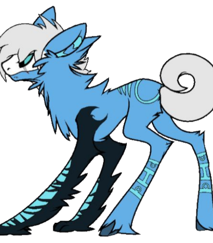
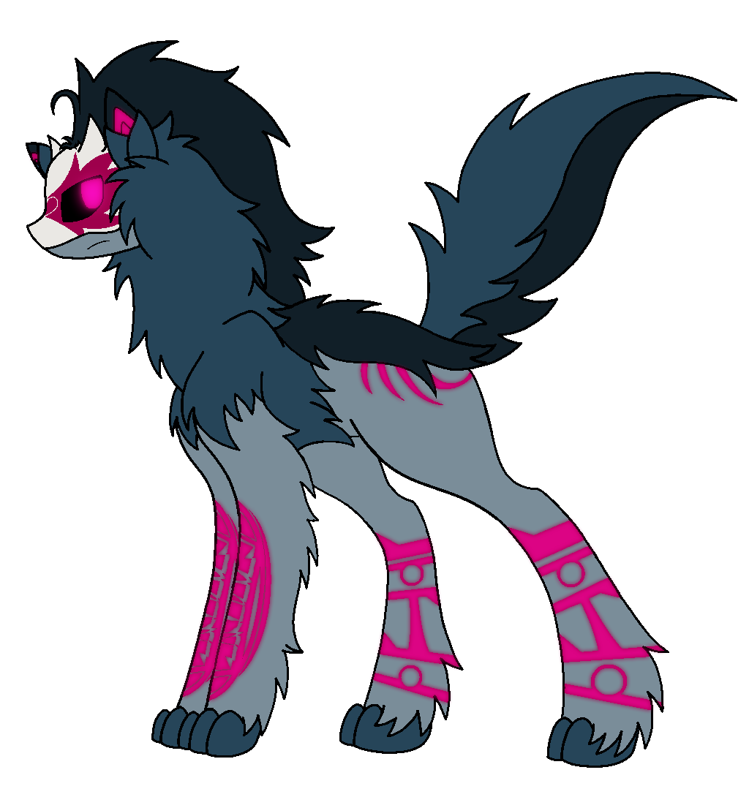

Somewhere else... A familiar, yet different nostalgia
Everything contained within this record represents the culmination of several years of intermittent roleplay projects.
To avoid encroaching too heavily on the original source material, this new era of Torch Hounds should be considered expanded-universe content.
The record serves three purposes:
To provide thematic, in-universe worldbuilding;
To offer community members material to establish their own stories;
And to bring newcomers up to speed so they may, if they wish, participate fully in the ongoing community.
Okashi
Cirhaska
